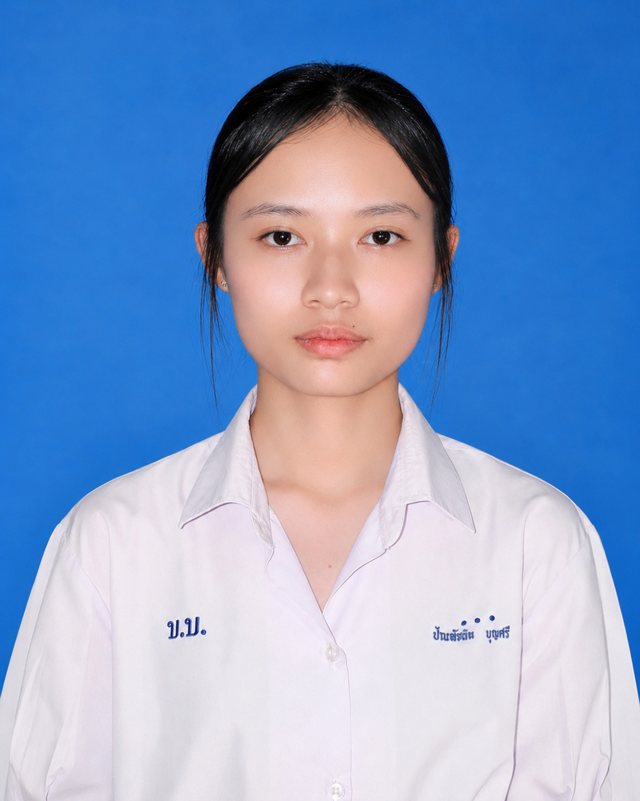
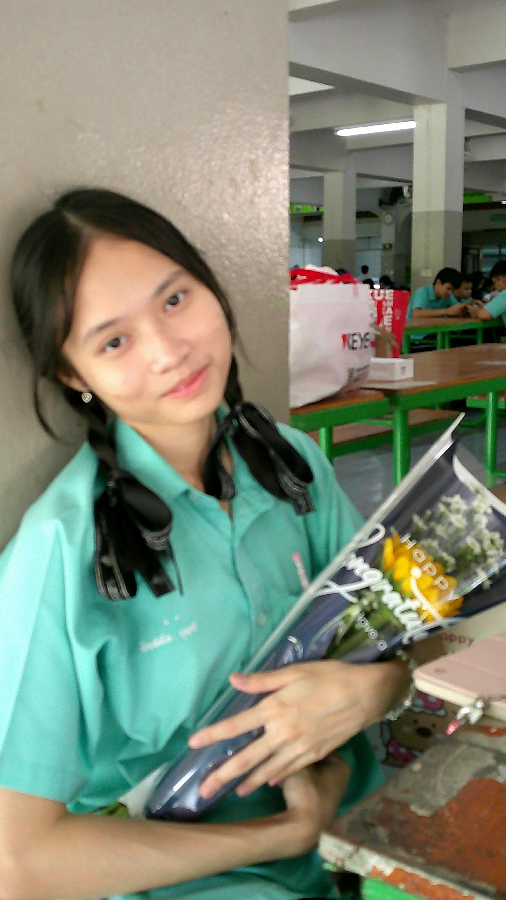

ชื่อ-นามสกุล: น.ส.ปัณฑ์ชนิต บุญศรี (Panchanit Boonsri)
การศึกษา: ระดับชั้นมัธยมศึกษาปีที่ 6
แผนการเรียน: วิทยาศาสตร์-คณิตศาสตร์ (MSEP)
สวัสดีค่ะ ดิฉันชื่อปัณฑ์ชนิต บุญศรี ปัจจุบันศึกษาอยู่ในแผนการเรียนวิทยาศาสตร์-คณิตศาสตร์ (MSEP) ดิฉันมีความสนใจและชื่นชอบในวิชาชีววิทยา เนื่องจากเป็นวิชาที่ทำให้ได้เรียนรู้เกี่ยวกับสิ่งมีชีวิตและร่างกายมนุษย์ ด้วยความสนใจนี้ ดิฉันจึงมีความตั้งใจที่จะศึกษาต่อในคณะทันตแพทยศาสตร์ มหาวิทยาลัยจุฬาลงกรณ์ เพื่อนำความรู้ และทักษะที่ได้รับไปพัฒนาตนเองและสร้างประโยชน์ให้แก่ผู้อื่นและนำไปต่อยอดสู่การประกอบอาชีพทันตแพทย์ในอนาคต
